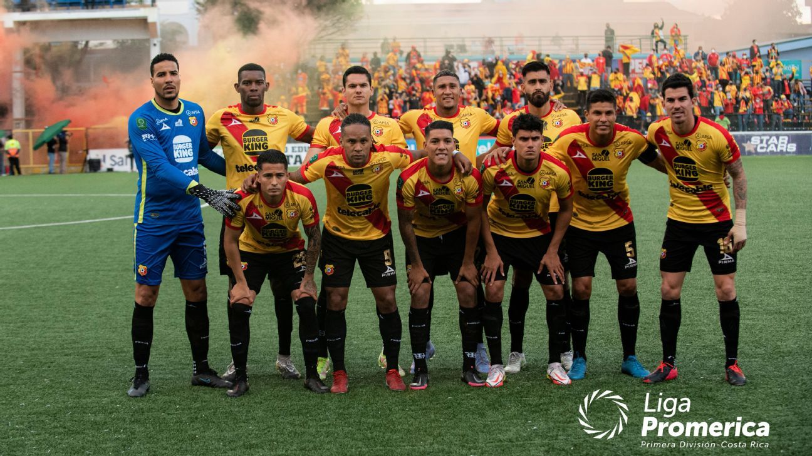

Back |
Home |
Next
--- CAMPEONES EN EL CENTENARIO ---

Herediano se une a selecta lista de equipos campeones en su Centenario
El Club Sport Herediano celebra en grande la consecución del título número 29 de toda su historia y cómo no hacerlo, los florenses salieron monarcas en el año que celebraron su preciado Centenario.
Los rojiamarillos se impusieron al Saprissa con superioridad en la gran final, pero también supieron sufrir durante el partido, trabajaron y finalmente llegaron los goles de Yeltsin Tejeda y Miguel Franco que terminaron por dar el 3-2 en la pizarra y el 4-2 en el marcador global que hicieron inminente la conquista del equipo que dirige Jeaustin Campos.
Esta victoria significó la medalla de oro, la copa de campeón para Herediano que suma una estrella más en un año más especial como lo es el Centenario.
Fundado en 1921, Herediano es conocido como ‘El equipo que nació grande” pues ese mismo año consiguió su primera copa de campeón de Costa Rica y 100 años después repite la historia. Este logro de haber sido monarca en su año número 100 es un logro que solo otros diez equipos han podido conseguir.
--- Celebración del centenario ---